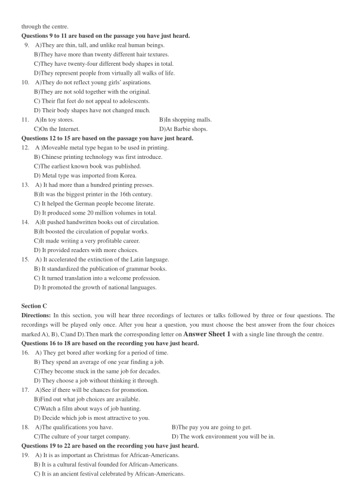
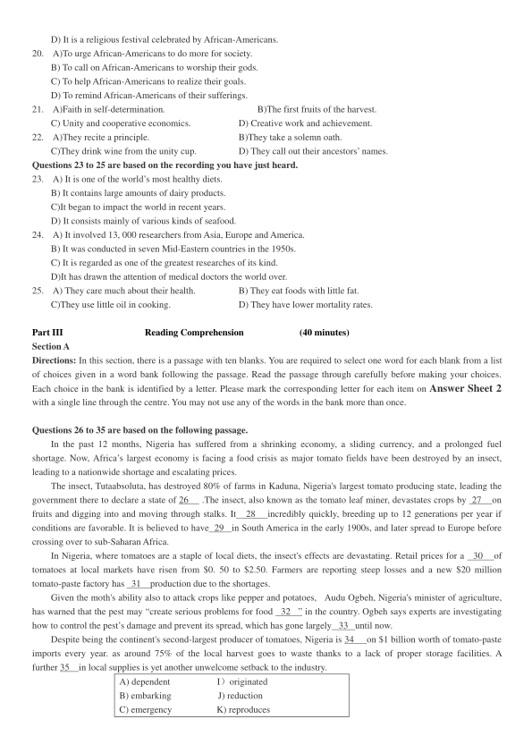
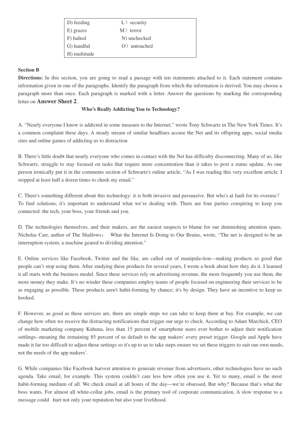
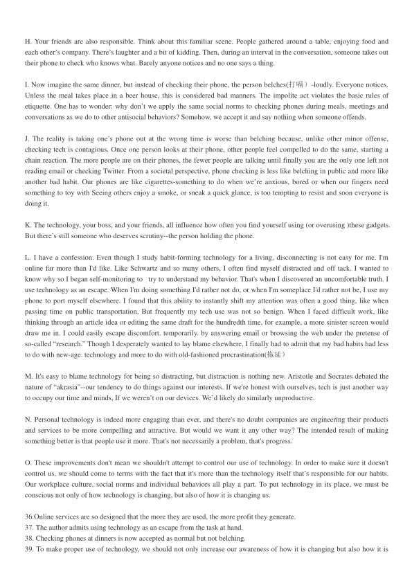

第 1 / 8 页

2017 年12 月大学英语六级考试真题（第1 套）
Part I
Writing
(30 minutes)
请于正式开考后半小时内完成该部分，之后将进行听力考试
Directions: For this part, you are allowed 30 minutes to write an essay commenting on the saying “Respect others, and
you will be respected.”
You can cite examples to illustrate your views. You should write at least 150 words but no more
than 200 words.
Part II
Listening Comprehension
(30 minutes)
Section A
Directions: In this section, you will hear two long conversations At the end of each conversation, you will hear four
questions. Both the conversation and the questions will be spoken only once. After you hear a question, you must choose the
best answer from the four choices marked A), B), C) and D). Then mark the corresponding letter on Answer Sheet 1 with
a single line through the centre.
Questions1 to 4 are based on the conversation you have just heard.
1.
A) They reward businesses that eliminate food waste.
B) They prohibit the sale of foods that have gone stale.
C) They facilitate the donation of unsold foods to the needy.
D) They forbid businesses to produce more foods than needed.
2.
A) It imposed penalties on businesses that waste food.
B) It passed a law aiming to stop overproduction .
C) It voted
against food import from outside Europe.
D) It prohibited the promotion of bulk food sales.
3.
A) It has warmed its people against possible food shortage.
B) It has penalized businesses that keep overproducing foods.
C) It has started a nationwide campaign against food waste.
D) It has banned supermarkets from dumping edible foods.
4 .
A) The confusion over food expiration labels.
B) The surplus resulting from overproduction.
C) Americans' habit of buying food in bulk.
D) A lack of regulation on food consumption.
Questions 5 to 8 are based on the conversation you have just heard.
5.
A) It has started a week-long promotion campaign.
B) It has just launched its annual anniversary sales.
C) It offers regular weekend sales all the year round.
D) It specializes in the sale of ladies designer dresses.
6.
A) Price reductions for its frequent customers.
B) Coupons for customers with bulk purchases.
C)Free delivery of purchases for senior customers.
D) Price adjustments within seven days of purchase.
7.
A)Mail a gift card to her.
B) Allow her to buy on credit.
C) Credit it to her account.
D) Give her some coupons.
8.
A) Refunding for goods returned.
B) Free installing of appliances.
C)Prolonged goods warranty.
D)Complimentary tailoring.
Section B
Directions: In this section, you will hear two passages. At the end of each passage, you will hear three or four questions.
Both the passage and the questions will be spoken only once. After you hear a question, you must choose the best answer
from the four choices marked A), B), C)and D). Then mark the corresponding letter on Answer Sheet 1 with a single line
查看 / 复制本页文字
2017 年12 月大学英语六级考试真题（第1 套） Part I Writing (30 minutes) 请于正式开考后半小时内完成该部分，之后将进行听力考试 Directions: For this part, you are allowed 30 minutes to write an essay commenting on the saying “Respect others, and you will be respected.” You can cite examples to illustrate your views. You should write at least 150 words but no more than 200 words. Part II Listening Comprehension (30 minutes) Section A Directions: In this section, you will hear two long conversations At the end of each conversation, you will hear four questions. Both the conversation and the questions will be spoken only once. After you hear a question, you must choose the best answer from the four choices marked A), B), C) and D). Then mark the corresponding letter on Answer Sheet 1 with a single line through the centre. Questions1 to 4 are based on the conversation you have just heard. 1. A) They reward businesses that eliminate food waste. B) They prohibit the sale of foods that have gone stale. C) They facilitate the donation of unsold foods to the needy. D) They forbid businesses to produce more foods than needed. 2. A) It imposed penalties on businesses that waste food. B) It passed a law aiming to stop overproduction . C) It voted against food import from outside Europe. D) It prohibited the promotion of bulk food sales. 3. A) It has warmed its people against possible food shortage. B) It has penalized businesses that keep overproducing foods. C) It has started a nationwide campaign against food waste. D) It has banned supermarkets from dumping edible foods. 4 . A) The confusion over food expiration labels. B) The surplus resulting from overproduction. C) Americans' habit of buying food in bulk. D) A lack of regulation on food consumption. Questions 5 to 8 are based on the conversation you have just heard. 5. A) It has started a week-long promotion campaign. B) It has just launched its annual anniversary sales. C) It offers regular weekend sales all the year round. D) It specializes in the sale of ladies designer dresses. 6. A) Price reductions for its frequent customers. B) Coupons for customers with bulk purchases. C)Free delivery of purchases for senior customers. D) Price adjustments within seven days of purchase. 7. A)Mail a gift card to her. B) Allow her to buy on credit. C) Credit it to her account. D) Give her some coupons. 8. A) Refunding for goods returned. B) Free installing of appliances. C)Prolonged goods warranty. D)Complimentary tailoring. Section B Directions: In this section, you will hear two passages. At the end of each passage, you will hear three or four questions. Both the passage and the questions will be spoken only once. After you hear a question, you must choose the best answer from the four choices marked A), B), C)and D). Then mark the corresponding letter on Answer Sheet 1 with a single line
第 2 / 8 页

through the centre.
Questions 9 to 11 are based on the passage you have just heard.
9.
A)They are thin, tall, and unlike real human beings.
B)They have more than twenty different hair textures.
C)They have twenty-four different body shapes in total.
D)They represent people from virtually all walks of life.
10.
A)They do not reflect young girls’ aspirations.
B)They are not sold together with the original.
C) Their flat feet do not appeal to adolescents.
D) Their body shapes have not changed much.
11.
A)In toy stores.
B)In shopping malls.
C)On the Internet.
D)At Barbie shops.
Questions 12 to 15 are based on the passage you have just heard.
12.
A )Moveable metal type began to be used in printing.
B) Chinese printing technology was first introduce.
C)The earliest known book was published.
D) Metal type was imported from Korea.
13.
A) It had more than a hundred printing presses.
B)It was the biggest printer in the 16th century.
C) It helped the German people become literate.
D) It produced some 20 million volumes in total.
14.
A)It pushed handwritten books out of circulation.
B)It boosted the circulation of popular works.
C)It made writing a very profitable career.
D) It provided readers with more choices.
15.
A) It accelerated the extinction of the Latin language.
B) It standardized the publication of grammar books.
C) It turned translation into a welcome profession.
D) It promoted the growth of national languages.
Section C
Directions: In this section, you will hear three recordings of lectures or talks followed by three or four questions. The
recordings will be played only once. After you hear a question, you must choose the best answer from the four choices
marked A), B), C)and D).Then mark the corresponding letter on Answer Sheet 1 with a single line through the centre.
Questions 16 to 18 are based on the recording you have just heard.
16.
A) They get bored after working for a period of time.
B) They spend an average of one year finding a job.
C)They become stuck in the same job for decades.
D) They choose a job without thinking it through.
17.
A)See if there will be chances for promotion.
B)Find out what job choices are available.
C)Watch a film about ways of job hunting.
D) Decide which job is most attractive to you.
18.
A)The qualifications you have.
B)The pay you are going to get.
C)The culture of your target company.
D) The work environment you will be in.
Questions 19 to 22 are based on the recording you have just heard.
19.
A) It is as important as Christmas for African-Americans.
B) It is a cultural festival founded for African-Americans.
C) It is an ancient festival celebrated by African-Americans.
查看 / 复制本页文字
through the centre. Questions 9 to 11 are based on the passage you have just heard. 9. A)They are thin, tall, and unlike real human beings. B)They have more than twenty different hair textures. C)They have twenty-four different body shapes in total. D)They represent people from virtually all walks of life. 10. A)They do not reflect young girls’ aspirations. B)They are not sold together with the original. C) Their flat feet do not appeal to adolescents. D) Their body shapes have not changed much. 11. A)In toy stores. B)In shopping malls. C)On the Internet. D)At Barbie shops. Questions 12 to 15 are based on the passage you have just heard. 12. A )Moveable metal type began to be used in printing. B) Chinese printing technology was first introduce. C)The earliest known book was published. D) Metal type was imported from Korea. 13. A) It had more than a hundred printing presses. B)It was the biggest printer in the 16th century. C) It helped the German people become literate. D) It produced some 20 million volumes in total. 14. A)It pushed handwritten books out of circulation. B)It boosted the circulation of popular works. C)It made writing a very profitable career. D) It provided readers with more choices. 15. A) It accelerated the extinction of the Latin language. B) It standardized the publication of grammar books. C) It turned translation into a welcome profession. D) It promoted the growth of national languages. Section C Directions: In this section, you will hear three recordings of lectures or talks followed by three or four questions. The recordings will be played only once. After you hear a question, you must choose the best answer from the four choices marked A), B), C)and D).Then mark the corresponding letter on Answer Sheet 1 with a single line through the centre. Questions 16 to 18 are based on the recording you have just heard. 16. A) They get bored after working for a period of time. B) They spend an average of one year finding a job. C)They become stuck in the same job for decades. D) They choose a job without thinking it through. 17. A)See if there will be chances for promotion. B)Find out what job choices are available. C)Watch a film about ways of job hunting. D) Decide which job is most attractive to you. 18. A)The qualifications you have. B)The pay you are going to get. C)The culture of your target company. D) The work environment you will be in. Questions 19 to 22 are based on the recording you have just heard. 19. A) It is as important as Christmas for African-Americans. B) It is a cultural festival founded for African-Americans. C) It is an ancient festival celebrated by African-Americans.
第 3 / 8 页

D) It is a religious festival celebrated by African-Americans.
20.
A)To urge African-Americans to do more for society.
B) To call on African-Americans to worship their gods.
C) To help African-Americans to realize their goals.
D) To remind African-Americans of their sufferings.
21.
A)Faith in self-determination.
B)The first fruits of the harvest.
C) Unity and cooperative economics.
D) Creative work and achievement.
22.
A)They recite a principle.
B)They take a solemn oath.
C)They drink wine from the unity cup.
D) They call out their ancestors’ names.
Questions 23 to 25 are based on the recording you have just heard.
23.
A) It is one of the world’s most healthy diets.
B) It contains large amounts of dairy products.
C)It began to impact the world in recent years.
D) It consists mainly of various kinds of seafood.
24.
A) It involved 13, 000 researchers from Asia, Europe and America.
B) It was conducted in seven Mid-Eastern countries in the 1950s.
C) It is regarded as one of the greatest researches of its kind.
D)It has drawn the attention of medical doctors the world over.
25.
A) They care much about their health.
B) They eat foods with little fat.
C)They use little oil in cooking.
D) They have lower mortality rates.
Part III
Reading Comprehension
(40 minutes)
Section A
Directions: In this section, there is a passage with ten blanks. You are required to select one word for each blank from a list
of choices given in a word bank following the passage. Read the passage through carefully before making your choices.
Each choice in the bank is identified by a letter. Please mark the corresponding letter for each item on Answer Sheet 2
with a single line through the centre. You may not use any of the words in the bank more than once.
Questions 26 to 35 are based on the following passage.
In the past 12 months, Nigeria has suffered from a shrinking economy, a sliding currency, and a prolonged fuel
shortage. Now, Africa’s largest economy is facing a food crisis as major tomato fields have been destroyed by an insect,
leading to a nationwide shortage and escalating prices.
The insect, Tutaabsoluta, has destroyed 80% of farms in Kaduna, Nigeria's largest tomato producing state, leading the
government there to declare a state of 26
.The insect, also known as the tomato leaf miner, devastates crops by 27
on
fruits and digging into and moving through stalks. It
28
incredibly quickly, breeding up to 12 generations per year if
conditions are favorable. It is believed to have 29
in South America in the early 1900s, and later spread to Europe before
crossing over to sub-Saharan Africa.
In Nigeria, where tomatoes are a staple of local diets, the insect's effects are devastating. Retail prices for a
30
of
tomatoes at local markets have risen from $0. 50 to $2.50. Farmers are reporting steep losses and a new $20 million
tomato-paste factory has 31
production due to the shortages.
Given the moth's ability also to attack crops like pepper and potatoes,
Audu Ogbeh, Nigeria's minister of agriculture,
has warned that the pest may “create serious problems for food
32
” in the country. Ogbeh says experts are investigating
how to control the pest’s damage and prevent its spread, which has gone largely 33 until now.
Despite being the continent's second-largest producer of tomatoes, Nigeria is 34
on $1 billion worth of tomato-paste
imports every year. as around 75% of the local harvest goes to waste thanks to a lack of proper storage facilities. A
further 35
in local supplies is yet another unwelcome setback to the industry.
A) dependent
I）originated
B) embarking
J) reduction
C) emergency
K) reproduces
查看 / 复制本页文字
D) It is a religious festival celebrated by African-Americans. 20. A)To urge African-Americans to do more for society. B) To call on African-Americans to worship their gods. C) To help African-Americans to realize their goals. D) To remind African-Americans of their sufferings. 21. A)Faith in self-determination. B)The first fruits of the harvest. C) Unity and cooperative economics. D) Creative work and achievement. 22. A)They recite a principle. B)They take a solemn oath. C)They drink wine from the unity cup. D) They call out their ancestors’ names. Questions 23 to 25 are based on the recording you have just heard. 23. A) It is one of the world’s most healthy diets. B) It contains large amounts of dairy products. C)It began to impact the world in recent years. D) It consists mainly of various kinds of seafood. 24. A) It involved 13, 000 researchers from Asia, Europe and America. B) It was conducted in seven Mid-Eastern countries in the 1950s. C) It is regarded as one of the greatest researches of its kind. D)It has drawn the attention of medical doctors the world over. 25. A) They care much about their health. B) They eat foods with little fat. C)They use little oil in cooking. D) They have lower mortality rates. Part III Reading Comprehension (40 minutes) Section A Directions: In this section, there is a passage with ten blanks. You are required to select one word for each blank from a list of choices given in a word bank following the passage. Read the passage through carefully before making your choices. Each choice in the bank is identified by a letter. Please mark the corresponding letter for each item on Answer Sheet 2 with a single line through the centre. You may not use any of the words in the bank more than once. Questions 26 to 35 are based on the following passage. In the past 12 months, Nigeria has suffered from a shrinking economy, a sliding currency, and a prolonged fuel shortage. Now, Africa’s largest economy is facing a food crisis as major tomato fields have been destroyed by an insect, leading to a nationwide shortage and escalating prices. The insect, Tutaabsoluta, has destroyed 80% of farms in Kaduna, Nigeria's largest tomato producing state, leading the government there to declare a state of 26 .The insect, also known as the tomato leaf miner, devastates crops by 27 on fruits and digging into and moving through stalks. It 28 incredibly quickly, breeding up to 12 generations per year if conditions are favorable. It is believed to have 29 in South America in the early 1900s, and later spread to Europe before crossing over to sub-Saharan Africa. In Nigeria, where tomatoes are a staple of local diets, the insect's effects are devastating. Retail prices for a 30 of tomatoes at local markets have risen from $0. 50 to $2.50. Farmers are reporting steep losses and a new $20 million tomato-paste factory has 31 production due to the shortages. Given the moth's ability also to attack crops like pepper and potatoes, Audu Ogbeh, Nigeria's minister of agriculture, has warned that the pest may “create serious problems for food 32 ” in the country. Ogbeh says experts are investigating how to control the pest’s damage and prevent its spread, which has gone largely 33 until now. Despite being the continent's second-largest producer of tomatoes, Nigeria is 34 on $1 billion worth of tomato-paste imports every year. as around 75% of the local harvest goes to waste thanks to a lack of proper storage facilities. A further 35 in local supplies is yet another unwelcome setback to the industry. A) dependent I）originated B) embarking J) reduction C) emergency K) reproduces
第 4 / 8 页

D) feeding
L）security
E) grazes
M）terror
F) halted
N) unchecked
G) handful
O）untouched
H) multitude
Section B
Directions: In this section, you are going to read a passage with ten statements attached to it. Each statement contains
information given in one of the paragraphs. Identify the paragraph from which the information is derived. You may choose a
paragraph more than once. Each paragraph is marked with a letter. Answer the questions by marking the corresponding
letter on Answer Sheet 2.
Who’s Really Addicting You to Technology?
A. “Nearly everyone I know is addicted in some measure to the Internet,” wrote Tony Schwartz in The New York Times. It’s
a common complaint these days. A steady stream of similar headlines accuse the Net and its offspring apps, social media
sites and online games of addicting us to distraction
B. There’s little doubt that nearly everyone who comes in contact with the Net has difficulty disconnecting. Many of us, like
Schwartz, struggle to stay focused on tasks that require more concentration than it takes to post a status update. As one
person ironically put it in the comments section of Schwartz's online article, “As I was reading this very excellent article. I
stopped at least half a dozen times to cheek my email.”
C. There's something different about this technology: it is both invasive and persuasive. But who's at fault for its overuse？
To find solutions, it's important to understand what we’re dealing with. There are four parties conspiring to keep you
connected: the tech, your boss, your friends and you.
D. The technologies themselves, and their makers, are the easiest suspects to blame for our diminishing attention spans.
Nicholas Carr, author of The Shallows：What the Internet Is Doing to Our Brains, wrote, “The net is designed to be an
interruption system, a machine geared to dividing attention.”
E. Online services like Facebook, Twitter and the like, are called out of manipula-tion—making products so good that
people can’t stop using them. After studying these products for several years, I wrote a book about how they do it. I learned
it all starts with the business model. Since these services rely on advertising revenue, the more frequently you use them, the
more money they make. It’s no winder these companies employ teams of people focused on engineering their services to be
as engaging as possible. These products aren't habit-forming by chance; it's by design. They have an incentive to keep us
hooked.
F. However, as good as these services are, there are simple steps we can take to keep them at bay. For example, we can
change how often we receive the distracting notifications that trigger our urge to check. According to Adam Marchick, CEO
of mobile marketing company Kahuna, less than 15 percent of smartphone users ever bother to adjust their notification
settlings--meaning the remaining 85 percent of us default to the app makers' every preset trigger. Google and Apple have
made it far too difficult to adjust these settings so it's up to us to take steps ensure we set these triggers to suit our own needs,
not the needs of the app makers’.
G. While companies like Facebook harvest attention to generate revenue from advertisers, other technologies have no such
agenda. Take email, for example. This system couldn’t care less how often you use it. Yet to many, email is the most
habit-forming medium of all. We check email at all hours of the day—we’re obsessed, But why? Because that’s what the
boss wants. For almost all white-collar jobs, email is the primary tool of corporate communication, A slow response to a
message could hurt not only your reputation but also your livelihood.
查看 / 复制本页文字
D) feeding L）security E) grazes M）terror F) halted N) unchecked G) handful O）untouched H) multitude Section B Directions: In this section, you are going to read a passage with ten statements attached to it. Each statement contains information given in one of the paragraphs. Identify the paragraph from which the information is derived. You may choose a paragraph more than once. Each paragraph is marked with a letter. Answer the questions by marking the corresponding letter on Answer Sheet 2. Who’s Really Addicting You to Technology? A. “Nearly everyone I know is addicted in some measure to the Internet,” wrote Tony Schwartz in The New York Times. It’s a common complaint these days. A steady stream of similar headlines accuse the Net and its offspring apps, social media sites and online games of addicting us to distraction B. There’s little doubt that nearly everyone who comes in contact with the Net has difficulty disconnecting. Many of us, like Schwartz, struggle to stay focused on tasks that require more concentration than it takes to post a status update. As one person ironically put it in the comments section of Schwartz's online article, “As I was reading this very excellent article. I stopped at least half a dozen times to cheek my email.” C. There's something different about this technology: it is both invasive and persuasive. But who's at fault for its overuse？ To find solutions, it's important to understand what we’re dealing with. There are four parties conspiring to keep you connected: the tech, your boss, your friends and you. D. The technologies themselves, and their makers, are the easiest suspects to blame for our diminishing attention spans. Nicholas Carr, author of The Shallows：What the Internet Is Doing to Our Brains, wrote, “The net is designed to be an interruption system, a machine geared to dividing attention.” E. Online services like Facebook, Twitter and the like, are called out of manipula-tion—making products so good that people can’t stop using them. After studying these products for several years, I wrote a book about how they do it. I learned it all starts with the business model. Since these services rely on advertising revenue, the more frequently you use them, the more money they make. It’s no winder these companies employ teams of people focused on engineering their services to be as engaging as possible. These products aren't habit-forming by chance; it's by design. They have an incentive to keep us hooked. F. However, as good as these services are, there are simple steps we can take to keep them at bay. For example, we can change how often we receive the distracting notifications that trigger our urge to check. According to Adam Marchick, CEO of mobile marketing company Kahuna, less than 15 percent of smartphone users ever bother to adjust their notification settlings--meaning the remaining 85 percent of us default to the app makers' every preset trigger. Google and Apple have made it far too difficult to adjust these settings so it's up to us to take steps ensure we set these triggers to suit our own needs, not the needs of the app makers’. G. While companies like Facebook harvest attention to generate revenue from advertisers, other technologies have no such agenda. Take email, for example. This system couldn’t care less how often you use it. Yet to many, email is the most habit-forming medium of all. We check email at all hours of the day—we’re obsessed, But why? Because that’s what the boss wants. For almost all white-collar jobs, email is the primary tool of corporate communication, A slow response to a message could hurt not only your reputation but also your livelihood.
第 5 / 8 页

H. Your friends are also responsible. Think about this familiar scene. People gathered around a table, enjoying food and
each other’s company. There’s laughter and a bit of kidding. Then, during an interval in the conversation, someone takes out
their phone to check who knows what. Barely anyone notices and no one says a thing.
I. Now imagine the same dinner, but instead of checking their phone, the person belches(打嗝）-loudly. Everyone notices.
Unless the meal takes place in a beer house, this is considered bad manners. The impolite act violates the basic rules of
etiquette. One has to wonder: why don’t we apply the same social norms to checking phones during meals, meetings and
conversations as we do to other antisocial behaviors? Somehow, we accept it and say nothing when someone offends.
J. The reality is taking one’s phone out at the wrong time is worse than belching because, unlike other minor offense,
checking tech is contagious. Once one person looks at their phone, other people feel compelled to do the same, starting a
chain reaction. The more people are on their phones, the fewer people are talking until finally you are the only one left not
reading email or checking Twitter. From a societal perspective, phone checking is less like belching in public and more like
another bad habit. Our phones are like cigarettes-something to do when we’re anxious, bored or when our fingers need
something to toy with Seeing others enjoy a smoke, or sneak a quick glance, is too tempting to resist and soon everyone is
doing it.
K. The technology, your boss, and your friends, all influence how often you find yourself using (or overusing )these gadgets.
But there’s still someone who deserves scrutiny--the person holding the phone.
L. I have a confession. Even though I study habit-forming technology for a living, disconnecting is not easy for me. I'm
online far more than I'd like. Like Schwartz and so many others, I often find myself distracted and off tack. I wanted to
know why so I began self-monitoring to try to understand my behavior. That's when I discovered an uncomfortable truth. I
use technology as an escape. When I'm doing something I'd rather not do, or when I'm someplace I'd rather not be, I use my
phone to port myself elsewhere. I found that this ability to instantly shift my attention was often a good thing, like when
passing time on public transportation, But frequently my tech use was not so benign. When I faced difficult work, like
thinking through an article idea or editing the same draft for the hundredth time, for example, a more sinister screen would
draw me in. I could easily escape discomfort. temporarily. by answering email or browsing the web under the pretense of
so-called “research.” Though I desperately wanted to lay blame elsewhere, I finally had to admit that my bad habits had less
to do with new-age. technology and more to do with old-fashioned procrastination(拖延）
M. It's easy to blame technology for being so distracting, but distraction is nothing new. Aristotle and Socrates debated the
nature of “akrasia”--our tendency to do things against our interests. If we're honest with ourselves, tech is just another way
to occupy our time and minds, If we weren’t on our devices. We’d likely do similarly unproductive.
N. Personal technology is indeed more engaging than ever, and there's no doubt companies are engineering their products
and services to be more compelling and attractive. But would we want it any other way? The intended result of making
something better is that people use it more. That's not necessarily a problem, that's progress.
O. These improvements don't mean we shouldn't attempt to control our use of technology. In order to make sure it doesn't
control us, we should come to terms with the fact that it's more than the technology itself that’s responsible for our habits.
Our workplace culture, social norms and individual behaviors all play a part. To put technology in its place, we must be
conscious not only of how technology is changing, but also of how it is changing us.
36.Online services are so designed that the more they are used, the more profit they generate.
37. The author admits using technology as an escape from the task at hand.
38. Checking phones at dinners is now accepted as normal but not belching.
39. To make proper use of technology, we should not only increase our awareness of how it is changing but also how it is
查看 / 复制本页文字
H. Your friends are also responsible. Think about this familiar scene. People gathered around a table, enjoying food and each other’s company. There’s laughter and a bit of kidding. Then, during an interval in the conversation, someone takes out their phone to check who knows what. Barely anyone notices and no one says a thing. I. Now imagine the same dinner, but instead of checking their phone, the person belches(打嗝）-loudly. Everyone notices. Unless the meal takes place in a beer house, this is considered bad manners. The impolite act violates the basic rules of etiquette. One has to wonder: why don’t we apply the same social norms to checking phones during meals, meetings and conversations as we do to other antisocial behaviors? Somehow, we accept it and say nothing when someone offends. J. The reality is taking one’s phone out at the wrong time is worse than belching because, unlike other minor offense, checking tech is contagious. Once one person looks at their phone, other people feel compelled to do the same, starting a chain reaction. The more people are on their phones, the fewer people are talking until finally you are the only one left not reading email or checking Twitter. From a societal perspective, phone checking is less like belching in public and more like another bad habit. Our phones are like cigarettes-something to do when we’re anxious, bored or when our fingers need something to toy with Seeing others enjoy a smoke, or sneak a quick glance, is too tempting to resist and soon everyone is doing it. K. The technology, your boss, and your friends, all influence how often you find yourself using (or overusing )these gadgets. But there’s still someone who deserves scrutiny--the person holding the phone. L. I have a confession. Even though I study habit-forming technology for a living, disconnecting is not easy for me. I'm online far more than I'd like. Like Schwartz and so many others, I often find myself distracted and off tack. I wanted to know why so I began self-monitoring to try to understand my behavior. That's when I discovered an uncomfortable truth. I use technology as an escape. When I'm doing something I'd rather not do, or when I'm someplace I'd rather not be, I use my phone to port myself elsewhere. I found that this ability to instantly shift my attention was often a good thing, like when passing time on public transportation, But frequently my tech use was not so benign. When I faced difficult work, like thinking through an article idea or editing the same draft for the hundredth time, for example, a more sinister screen would draw me in. I could easily escape discomfort. temporarily. by answering email or browsing the web under the pretense of so-called “research.” Though I desperately wanted to lay blame elsewhere, I finally had to admit that my bad habits had less to do with new-age. technology and more to do with old-fashioned procrastination(拖延） M. It's easy to blame technology for being so distracting, but distraction is nothing new. Aristotle and Socrates debated the nature of “akrasia”--our tendency to do things against our interests. If we're honest with ourselves, tech is just another way to occupy our time and minds, If we weren’t on our devices. We’d likely do similarly unproductive. N. Personal technology is indeed more engaging than ever, and there's no doubt companies are engineering their products and services to be more compelling and attractive. But would we want it any other way? The intended result of making something better is that people use it more. That's not necessarily a problem, that's progress. O. These improvements don't mean we shouldn't attempt to control our use of technology. In order to make sure it doesn't control us, we should come to terms with the fact that it's more than the technology itself that’s responsible for our habits. Our workplace culture, social norms and individual behaviors all play a part. To put technology in its place, we must be conscious not only of how technology is changing, but also of how it is changing us. 36.Online services are so designed that the more they are used, the more profit they generate. 37. The author admits using technology as an escape from the task at hand. 38. Checking phones at dinners is now accepted as normal but not belching. 39. To make proper use of technology, we should not only increase our awareness of how it is changing but also how it is
第 6 / 8 页
impacting us.
40. Most of us find it hard to focus on our immediate tasks because of Internet distractions.
41. When one person starts checking their phone, the others will follow suit.
42.The great majority of smartphone users don' t take the trouble to adjust their settings to suit their own purposes.
43.The Internet is regarded by some as designed to distract our attention.
44. The author attributes his tech addiction chiefly to his habit of putting off doing what he should do right away.
45.White-collar workers check email round the clock because it is required by their employers.
Section C
Directions: There are 2 passages in this section. Each passage is followed by some question or unfinished statements. For
each of them there are four choices marked A), B), C)and D). You should decide on the best choice and mark the
corresponding letter on Answer Sheet 2 with a single line through the centre.
Passage One
Questions 46 to 50 are based on the following passage.
You may have heard that Coca-Cola once contained an ingredient capable of sparking particular devotion in consumers:
cocaine. The cocaine. The “coca” in the name referred to the extracts of coca leaf that the drink's originator, chemist John
Pemberton, mixed with his sugary syrup( 浆汁). At the time, coca leaf extract mixed with wine was a common tonic( 滋补
品), and Pemberton's sweet brew was a way to get around local laws prohibiting the sale of alcohol. But the other half of the
name represents another ingredient, less infamous(名声不好的), perhaps, but also strangely potent: the kola nut.
In West Africa, people have long chewed kola nuts as stimulants, because they contain caffeine that also occurs
naturally in tea, coffee ,and chocolate .They also have heart stimulants .
Historian Paul Lovejoy relates that the cultivation of kola nuts in West Africa is hundreds of years old. The leafy,
spreading trees were planted on graves and as part of traditional rituals. Even though the nuts, which need to stay moist, can
be somewhat delicate to transport, traders carried them hundreds of miles throughout the forests and grasslands.
Europeans did not know of them until the 1500s when Portuguese ships arrived on the coast of what is now Sierra
Leone. And while the Portuguese took part in the trade, ferrying nuts down the coast along with other goods, by 1620, when
English explorer Richard Jobson made his way up the Gambia, the nuts were still peculiar to his eyes.
By the late 19th century, kola nuts were being shipped by the tonne to Europe and the US. Many made their way into
medicines, intended as a kind of energy boost. One such popular medicinal drink was Vin Mariani, a French product
consisting of coca extract mixed with red wine. It was created by a French chemist, Angelo Mariani, in 1863. So when
Pemberton created his drink, it represented an ongoing trend. When cocaine eventually fell from grace as a beverage
ingredient, kola-extract colas became popular.
The first year it was available, Coca-Cola averaged nine servings a day across all the Atlanta soda fountains where it
was sold. As it grew more popular, the company sold rights to bottle the soda, so it could travel easily. Today about 1. 9
billion Cokes are purchased daily. It's become so iconic that attempts to change its taste in 1985- sweetening it in a move
projected to boost sales proved disastrous, with widespread anger from consumers. "Coca-Cola Classic" returned to store
shelves just three months after the "New Coke" was released.
These days, the Coca-Cola recipe is a closely guarded secret. But it's said to no longer contain kola nut extract, relying
instead on artificial imitations to achieve the flavour.
46. What do we learn about chemist John Pemberton?
A)He used a strangely potent ingredient in a food supplement
B)He created a drink containing alcohol without breaking law
C)He became notorious because of the coca drink he developed.
D)He risked breaking local law to make a drink with coca leaves.
47. What does the passage say about kola nuts?
A)Their commercial value was first discovered by Portuguese settler.
B) They contain some kind of energy boost not found in any other food.
C) Many were shipped to Europe in the late 19th century for medicinal use.
查看 / 复制本页文字
impacting us. 40. Most of us find it hard to focus on our immediate tasks because of Internet distractions. 41. When one person starts checking their phone, the others will follow suit. 42.The great majority of smartphone users don' t take the trouble to adjust their settings to suit their own purposes. 43.The Internet is regarded by some as designed to distract our attention. 44. The author attributes his tech addiction chiefly to his habit of putting off doing what he should do right away. 45.White-collar workers check email round the clock because it is required by their employers. Section C Directions: There are 2 passages in this section. Each passage is followed by some question or unfinished statements. For each of them there are four choices marked A), B), C)and D). You should decide on the best choice and mark the corresponding letter on Answer Sheet 2 with a single line through the centre. Passage One Questions 46 to 50 are based on the following passage. You may have heard that Coca-Cola once contained an ingredient capable of sparking particular devotion in consumers: cocaine. The cocaine. The “coca” in the name referred to the extracts of coca leaf that the drink's originator, chemist John Pemberton, mixed with his sugary syrup( 浆汁). At the time, coca leaf extract mixed with wine was a common tonic( 滋补 品), and Pemberton's sweet brew was a way to get around local laws prohibiting the sale of alcohol. But the other half of the name represents another ingredient, less infamous(名声不好的), perhaps, but also strangely potent: the kola nut. In West Africa, people have long chewed kola nuts as stimulants, because they contain caffeine that also occurs naturally in tea, coffee ,and chocolate .They also have heart stimulants . Historian Paul Lovejoy relates that the cultivation of kola nuts in West Africa is hundreds of years old. The leafy, spreading trees were planted on graves and as part of traditional rituals. Even though the nuts, which need to stay moist, can be somewhat delicate to transport, traders carried them hundreds of miles throughout the forests and grasslands. Europeans did not know of them until the 1500s when Portuguese ships arrived on the coast of what is now Sierra Leone. And while the Portuguese took part in the trade, ferrying nuts down the coast along with other goods, by 1620, when English explorer Richard Jobson made his way up the Gambia, the nuts were still peculiar to his eyes. By the late 19th century, kola nuts were being shipped by the tonne to Europe and the US. Many made their way into medicines, intended as a kind of energy boost. One such popular medicinal drink was Vin Mariani, a French product consisting of coca extract mixed with red wine. It was created by a French chemist, Angelo Mariani, in 1863. So when Pemberton created his drink, it represented an ongoing trend. When cocaine eventually fell from grace as a beverage ingredient, kola-extract colas became popular. The first year it was available, Coca-Cola averaged nine servings a day across all the Atlanta soda fountains where it was sold. As it grew more popular, the company sold rights to bottle the soda, so it could travel easily. Today about 1. 9 billion Cokes are purchased daily. It's become so iconic that attempts to change its taste in 1985- sweetening it in a move projected to boost sales proved disastrous, with widespread anger from consumers. "Coca-Cola Classic" returned to store shelves just three months after the "New Coke" was released. These days, the Coca-Cola recipe is a closely guarded secret. But it's said to no longer contain kola nut extract, relying instead on artificial imitations to achieve the flavour. 46. What do we learn about chemist John Pemberton? A)He used a strangely potent ingredient in a food supplement B)He created a drink containing alcohol without breaking law C)He became notorious because of the coca drink he developed. D)He risked breaking local law to make a drink with coca leaves. 47. What does the passage say about kola nuts? A)Their commercial value was first discovered by Portuguese settler. B) They contain some kind of energy boost not found in any other food. C) Many were shipped to Europe in the late 19th century for medicinal use.
第 7 / 8 页
D) They were strange to the Europeans when first imported from West Africa.
48. How come kola-extract colas became popular?
A)Cocaine had become notorious.
C) Fountains were set up to sell them.
B)Alcoholic drinks were prohibited.
D) Rights were sold to bottle the soda.
49. What is known about the taste of Coca-Cola?
A)It was so designed as to create addiction in consumers.
B) It still relies on traditional kola nut extract.
C) It has become more popular among the old.
D) It has remained virtually unchanged since its creation.
50. What is the passage mainly about?
A)The evolution of Coca-Cola.
B)The medicinal value of Coca-Cola.
C)The success story of Coca-Cola.
D) The business strategy of Coca-Cola.
Passage Two
Questions 51 to 55 are based on the following passage
Twenty years ago, the Urban Land Institute defined the two types of cities that dominated the US landscape: smaller
cities that operated around standard 9-5 business hours and large metropolitan areas that ran all 24 hours of the day.
Analyzing and comparing cities using the lens of this basic divide gives interesting context to how investment capital flows
and housing prices have shifted.
In recent years, many mid-sized cities have begun to adopt a middle-of-the-road approach incorporating the excitement
and opportunity of large cities with small cities’ quiet after midnight.These18-hour cities are beginning to make waves in
real estate rankings and attract more real estate investment. What is underlying this new movement in real estate, and why
do these cities have so much appeal?
18-hour cities combine the best of 24-hour and 9-5 cities, which contributes to downtown revitalization. For decades,
many downtown cores in small to mid-sized cities were abandoned after work hours by workers who lived in the suburbs.
Movement out of city centers was widespread, and downtown tenants were predominantly made up of the working poor.
This generated little commerce for downtown businesses in the evenings, which made business and generating tax revenue
for municipal upkeep difficult. With the rise of a new concept in urban planning that aims to make life easier and more
convenient, increasing popularity for urban areas that caused the real estate pushes, in major cities like San Francisco or
New York, has inspired a type of forward thinking urbanity and in smaller cities
Transforming downtown areas so that they incorporate modern housing and improved walkability to local restaurants,
retail, and entertainment -especially when combined with improved infrastructure for cyclists and public transit-makes them
appeal to a more affluent demographic. These adjustments encourage employers in the knowledge and talent industries to
keep their offices downtown. Access to foot traffic and proximity to transit allow the type of entertainment-oriented
businesses such as bars and restaurants to stay open later, which attracts both younger, creative workers and baby boomers
nearing retirement alike. Because of their smaller size, most keep hours that allow people to enjoy themselves, then have
some quiet after midnight, as opposed to large major cities like New York, where the buzz of activity is ongoing.
These 18-hour cities are rapidly on the rise and offer great opportunities for homeowner investment. In many of these
cities such as Denver, a diverse and vigorous economy attracted to the urban core has offered stable employment for
residents. The right urban mix has propped up home occupancy, increased property values, and attracted significant
investment capital.
51. What do we learn about American cities twenty years ago?
A)They were divided into residential and business areas.
B)Their housing prices were linked with their prosperity.
C)There was a clear divide between large and small cities
D) They were places where large investment capital flowed.
52. What can be inferred from the passage about 18-hour cities?
A)They especially appeal to small businesses.
查看 / 复制本页文字
D) They were strange to the Europeans when first imported from West Africa. 48. How come kola-extract colas became popular? A)Cocaine had become notorious. C) Fountains were set up to sell them. B)Alcoholic drinks were prohibited. D) Rights were sold to bottle the soda. 49. What is known about the taste of Coca-Cola? A)It was so designed as to create addiction in consumers. B) It still relies on traditional kola nut extract. C) It has become more popular among the old. D) It has remained virtually unchanged since its creation. 50. What is the passage mainly about? A)The evolution of Coca-Cola. B)The medicinal value of Coca-Cola. C)The success story of Coca-Cola. D) The business strategy of Coca-Cola. Passage Two Questions 51 to 55 are based on the following passage Twenty years ago, the Urban Land Institute defined the two types of cities that dominated the US landscape: smaller cities that operated around standard 9-5 business hours and large metropolitan areas that ran all 24 hours of the day. Analyzing and comparing cities using the lens of this basic divide gives interesting context to how investment capital flows and housing prices have shifted. In recent years, many mid-sized cities have begun to adopt a middle-of-the-road approach incorporating the excitement and opportunity of large cities with small cities’ quiet after midnight.These18-hour cities are beginning to make waves in real estate rankings and attract more real estate investment. What is underlying this new movement in real estate, and why do these cities have so much appeal? 18-hour cities combine the best of 24-hour and 9-5 cities, which contributes to downtown revitalization. For decades, many downtown cores in small to mid-sized cities were abandoned after work hours by workers who lived in the suburbs. Movement out of city centers was widespread, and downtown tenants were predominantly made up of the working poor. This generated little commerce for downtown businesses in the evenings, which made business and generating tax revenue for municipal upkeep difficult. With the rise of a new concept in urban planning that aims to make life easier and more convenient, increasing popularity for urban areas that caused the real estate pushes, in major cities like San Francisco or New York, has inspired a type of forward thinking urbanity and in smaller cities Transforming downtown areas so that they incorporate modern housing and improved walkability to local restaurants, retail, and entertainment -especially when combined with improved infrastructure for cyclists and public transit-makes them appeal to a more affluent demographic. These adjustments encourage employers in the knowledge and talent industries to keep their offices downtown. Access to foot traffic and proximity to transit allow the type of entertainment-oriented businesses such as bars and restaurants to stay open later, which attracts both younger, creative workers and baby boomers nearing retirement alike. Because of their smaller size, most keep hours that allow people to enjoy themselves, then have some quiet after midnight, as opposed to large major cities like New York, where the buzz of activity is ongoing. These 18-hour cities are rapidly on the rise and offer great opportunities for homeowner investment. In many of these cities such as Denver, a diverse and vigorous economy attracted to the urban core has offered stable employment for residents. The right urban mix has propped up home occupancy, increased property values, and attracted significant investment capital. 51. What do we learn about American cities twenty years ago? A)They were divided into residential and business areas. B)Their housing prices were linked with their prosperity. C)There was a clear divide between large and small cities D) They were places where large investment capital flowed. 52. What can be inferred from the passage about 18-hour cities? A)They especially appeal to small businesses.
第 8 / 8 页
B)They have seen a rise in property prices.
C)They have replaced quiet with excitement.
D) They have changed America's landscape.
53 Years ago, many downtown cores in small to mid-sized cities().
A)had hardly any business activity.
C) exhibited no signs of prosperity.
B)were crowded in business hours.
D) looked deserted in the evenings.
54. What characterizes the new downtown areas in 18-hour cities?
A）A sudden emergence of the knowledge industry.
B) Flooding in of large crowds of migrant workers.
C) Modernized housing and improved infrastructure.
D) More comfortable life and greater upward mobility.
55. What have 18-hour cities brought to the local residents?
A)More chances for promotion.
C) Greater cultural diversity.
B) Healthier living environment.
D)Better job opportunities.
Part IV
Translation
(30 minutes)
Directions: For this part, you are allowed 30 minutes to translate a passage from Chinese into English. You should write
your answer on Answer Sheet 2.
太湖是中国东部的一个淡水湖,占地面积2250 平方公里,是中国第三大淡水湖,仅次于鄱阳和洞庭。太湖约有90
个岛屿,大小从几平方米到几平方公里不等。太湖以其独特的“太湖石”而闻名,太湖石常用于装饰中国传统园林。太
湖也以高产的捕鱼业闻名。自上世纪70 年代后期以来,捕捞鱼蟹对沿湖的居民来说极为重要,并对周边地区的经济作
出了重大贡献。太湖地区是中国陶瓷( ceramics)业基地之一,其中宜兴的陶瓷厂家生产举世闻名的宜兴紫砂壶( clay
teapot)。
查看 / 复制本页文字
B)They have seen a rise in property prices. C)They have replaced quiet with excitement. D) They have changed America's landscape. 53 Years ago, many downtown cores in small to mid-sized cities(). A)had hardly any business activity. C) exhibited no signs of prosperity. B)were crowded in business hours. D) looked deserted in the evenings. 54. What characterizes the new downtown areas in 18-hour cities? A）A sudden emergence of the knowledge industry. B) Flooding in of large crowds of migrant workers. C) Modernized housing and improved infrastructure. D) More comfortable life and greater upward mobility. 55. What have 18-hour cities brought to the local residents? A)More chances for promotion. C) Greater cultural diversity. B) Healthier living environment. D)Better job opportunities. Part IV Translation (30 minutes) Directions: For this part, you are allowed 30 minutes to translate a passage from Chinese into English. You should write your answer on Answer Sheet 2. 太湖是中国东部的一个淡水湖,占地面积2250 平方公里,是中国第三大淡水湖,仅次于鄱阳和洞庭。太湖约有90 个岛屿,大小从几平方米到几平方公里不等。太湖以其独特的“太湖石”而闻名,太湖石常用于装饰中国传统园林。太 湖也以高产的捕鱼业闻名。自上世纪70 年代后期以来,捕捞鱼蟹对沿湖的居民来说极为重要,并对周边地区的经济作 出了重大贡献。太湖地区是中国陶瓷( ceramics)业基地之一,其中宜兴的陶瓷厂家生产举世闻名的宜兴紫砂壶( clay teapot)。